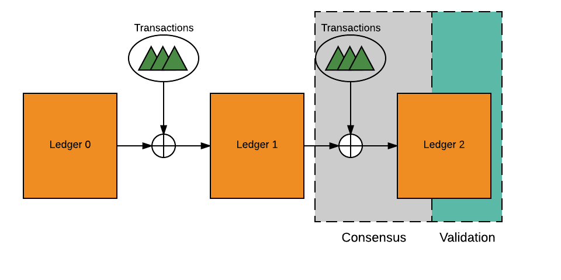
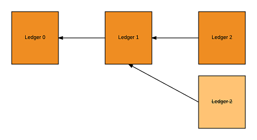

This section is a work in progress!!
Consensus is the task of reaching agreement within a distributed system in the presence of faulty or even malicious participants. This document outlines the Ripple Consensus Algorithm as implemented in rippled, but focuses on its utility as a generic consensus algorithm independent of the detailed mechanics of the Ripple Consensus Ledger. Most notably, the algorithm does not require fully synchronous communication between all nodes in the network, or even a fixed network topology, but instead achieves consensus via collectively trusted subnetworks.
A challenge for distributed systems is reaching agreement on changes in shared state. For the Ripple network, the shared state is the current ledger--account information, account balances, order books and other financial data. We will refer to shared distributed state as a ledger throughout the remainder of this document.

As shown above, new ledgers are made by applying a set of transactions to the prior ledger. For the Ripple network, transactions include payments, modification of account settings, updates to offers and more.
In a centralized system, generating the next ledger is trivial since there is a single unique arbiter of which transactions to include and how to apply them to a ledger. For decentralized systems, participants must resolve disagreements on the set of transactions to include, the order to apply those transactions, and even the resulting ledger after applying the transactions. This is even more difficult when some participants are faulty or malicious.
The Ripple network is a decentralized and trust-full network. Anyone is free to join and participants are free to choose a subset of peers that are collectively trusted to not collude in an attempt to defraud the participant. Leveraging this network of trust, the Ripple algorithm has two main components.
These phases are continually repeated to process transactions submitted to the network, generating successive ledgers and giving rise to the blockchain ledger history depicted below. In this diagram, time is flowing to the right, but links between ledgers point backward to the parent. Also note the alternate Ledger 2 that was generated by some participants, but which failed validation and was abandoned.

The remainder of this section describes the Consensus and Validation algorithms
in more detail and is meant as a companion guide to understanding the generic
implementation in rippled. The document does
not discuss correctness, fault-tolerance or liveness properties
of the algorithms or the full details of how they integrate within rippled
to support the Ripple Consensus Ledger.